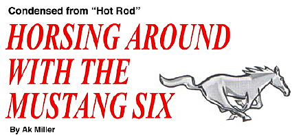
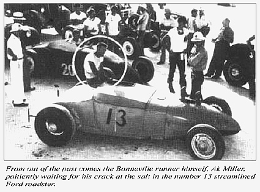

|
 |
AK MILLER is a legendary figure in the world of modified performance vehicles. Ak was co-founder of the world's oldest hot rod club, and during his term as President of the Southern California Timing Association, the first Bonneville Speed Trials were run; the modern method of classification of cars with respect to cubic inch engine sizes versus body styles was established; and the first sanctioned drag strip competition was started. He was also one of the founders of the National Hot Rod Association, Ak has raced in events around the world, including specialized competition like the Pikes Peak Hill Climb where he holds a record of six wins in eight years in the sports car division. Ford is unique in offering the service of Ak Miller as a Performance Advisor; to aid in the selection and application of high performance equipment that will be compatible with your vehicle and personal driving habits. Ak regularly tells "inside" info about the latest in high performance in his "Flak by Ak" column in publications like "Hot Rod" Magazine. You can get personal answers to questions by writing:
AK MILLER
Ford Performance Advisor
Autolite-Ford Parts Division
Merchandising Services Dept.
P.O. Box 3000
Livonia, Michigan 48151 |
|
In answer to requests for performance information about 6-cylinder engines, Performance Corner presents "Horsing Around With The Mustang Six," by Ak Miller, which appeared as a two-part article in the June-July 1967 issues of Hot Rod. Part I, which covered some very simple modifications and readily available parts from Ford and Lincoln-Mercury dealers, is presented in detail. Part II suggested some more ambitious modifications. Although any skilled mechanic could make them, they are only summarized here. Detailed information can be obtained from the July, 1967 issue of Hot Rod Magazine. |
|  |
PART I-WITH ECONOMY IN MIND, THIS FIRST "SHOT IN THE ARM" PRODUCED AN EXTRA 35 H.P. |
Ford performance items for the current lineup of Ford V8 engines are easy to come by, but when we consider such equipment for the six cylinder series, the cupboard is completely bare.
The reasons for this are quite simple. Six-cylinder engines are usually found in the lower-priced models, and their basic image is one of economy. Thus, the combination of low price and economy offers a great vehicle for the person interested in a fine, economical mode of transportation and one with an ample amount of horsepower.
However, there are scores of six-cylinder lovers who come up with the question, "How do 1 get just a little more power and what will it cost me?" To these people we would like to offer our experiences with a 1967 200 cubic inch Mustang equipped with a standard three-speed transmission (2.99 in first and 1.75 in second) and a differential gearing of 3.20. I personally felt this car would give us a good starting base since it offered an attractive body style, a very rugged three-speed all synchro gearbox, and had been blessed with the most robust seven-main crankshaft six-cylinder engine ever conceived. |
|
|
|